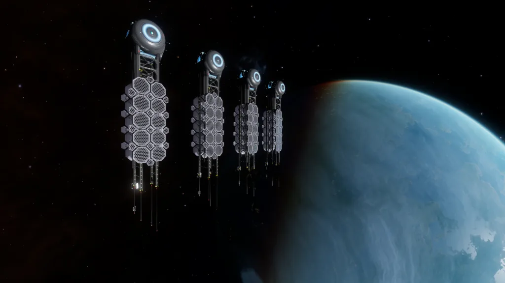
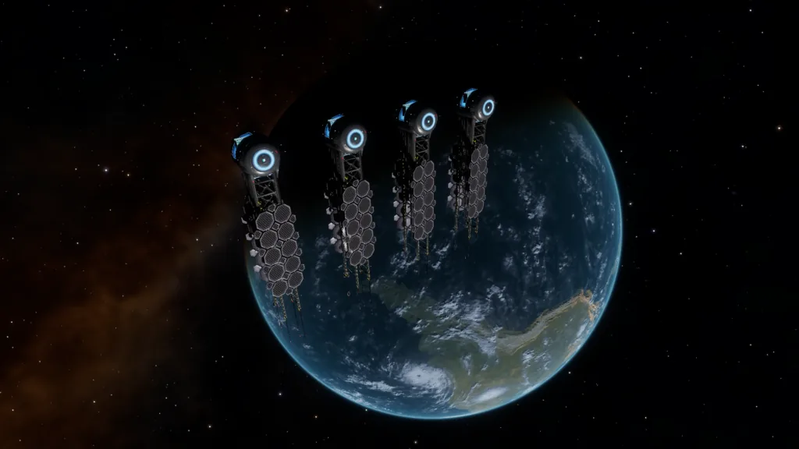

These memorials are placed in 7 systems in human occupied space, each containing a full list of all submitted memorial names.
| System | Body |
| Achenar | Capitol ( 6 d ) |
| Alioth | Turner’s World ( 5 b ) |
| Asellus Primus | 3 |
| Colonia | 4 |
| Dromi | 1 |
| Shinrarta Dezhra | Founders World ( 4 ) |
| Sol | Earth ( 3 ) |
Names can be submitted via a custom request portal. The exact list will not be detailed here, as they are long (currently split between 9 messages) and updated every few months.
The memorials consist of single Listening Post (previously there 4 Listening Post’s, each with separate Point of Interest), upon scanning the Listening Post you will receive multiple messages in your inbox (currently 9, as of Mar 3310).
Each message starts with the following:
Remembering those lost to us in life, in the knowledge they will live forever amongst the stars.
Followed by a list of newline-separated memorialized names, whose first letter of their first name falls in the range for the respective listening post. Sometimes, multiple names will appear on the same line; in this case, the first name in the list is used for sorting. Some names are prefixed with “CMDR”, indicating that they are a Commander name and not a real name.
Canonn wishes peace to those and their loved ones memorialized by these beacons. Godspeed.
Information and image credit to CMDR Johann Bererund.

